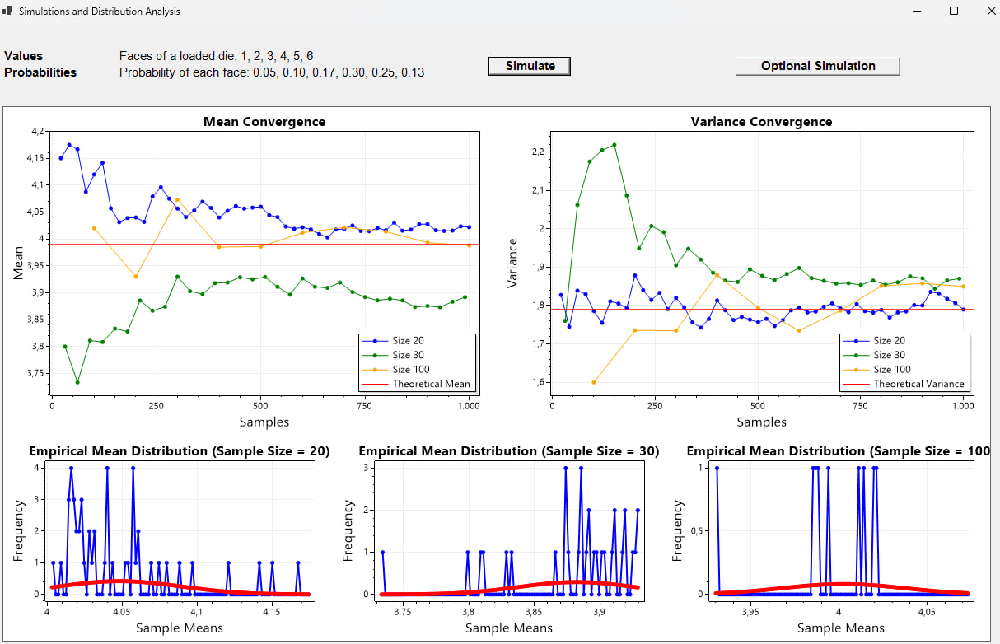
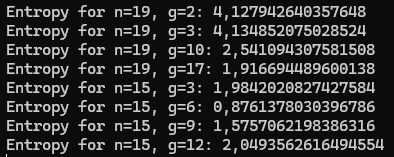

In this new simulation, the approach taken generates 1000 samples (m) with sizes (n) 20, 30 and 100, calculating the empirical mean and variance for each group.
What we can see is that with \(n\) sufficiently large, the distribution of the computed mean for each sample will approximate a normal distribution, regardless of the shape of the original distribution, as the CLT states (given an initial distribution with finite mean \(\mu\) and finite variance \(\sigma^2\)).
The mean of the distribution of sample means is approximately equal to the mean of the theoretical distribution, \(\mu\), whereas the variance of the sample means should be approximately \(\frac{\sigma^2}{n}\), where \(\sigma^2\) is the variance of the original distribution.
So the simulation confirms that the mean of the empirical means tends to the theoretical mean (calculated as a weighted average of the possible values according to their probability). With small sample sizes (e.g., size 20), the variance of the empirical means is more evident, but decreases significantly as the number of \(n\) increases, following the relationship \(\frac{\sigma^2}{n}\).
Larger samples (e.g. size 100) show faster and more stable convergence than than smaller samples (e.g. size 20). This confirms the importance of sample size in reducing statistical fluctuations.
This simulation highlights the link between sample size, precision of estimates and convergence of empirical statistics to theoretical ones. The graphs show how, by increasing the samples size, the empirical values approach the theoretical ones, with a reduction in the variability of the samples means. This behavior aligns with the Central Limit Theorem, which guarantees that the distribution of sample means approximates a normal distribution for sufficiently large samples.
Plots are generated using \( n = 19 \) and \( g = \{2, 3, 10, 17\} \) (Case A), and \( n = 15 \) and \( g = \{3, 6, 9, 12\} \) (Case B).
Once the program is run, we'll see the entropy values printed for each combination of \( n \) and \( g \). 
Here's how the results are to be interpreted:
Case A:
\( n = 19, g = \{2, 3, 10, 17\} \)
Since \( 19 \) is a prime number, the values of \( g \) that are coprime with \( 19 \) (\( 2, 3,
10, 17 \)) will generate more uniform distributions. These values of \( g \) will cover the
entire range of \([0, 18]\), and thus, the distribution should be more uniform.
We expect higher entropy values (close to \( \log_2(19) \approx 4.25 \)).
Case B:
\( n = 15, g = \{3, 6, 9, 12\} \)
\( 15 \) is not prime, and some of the values of \( g \) (\( 9 \) and \( 12 \)) are divisible by
factors of \( 15 \) (\( 3, 5 \)), which will lead to repeated values in the distribution. This
will result in lower entropy compared to Case A, since the values of \( Y \) will be
concentrated in fewer numbers (lower diversity).
Uniformity:
A uniform distribution means \( Y \) is unpredictable, making it ideal for cryptographic keys or
random numbers.
For \( n = 19 \) and \( g \in \{2, 3, 10, 17\} \), the resulting values of \( Y \) are likely to
be more evenly distributed.
This uniformity provides higher entropy and better resistance to cryptanalysis attacks.
Higher Entropy:
Case A, with \( n = 19 \) and coprime values of \( g \), generates distributions where the
values of \( Y \) are more evenly spread across the range. This makes it harder for an attacker
to predict the values.
Why does Case B illustrate vulnerabilities?
Lower Entropy:
For \( n = 15 \) (non-prime modulus), the behavior of \( g \) depends heavily on its factors.
\( g = 9 \) and \( g = 12 \) are not coprime with \( n = 15 \), leading to repeated patterns in
\( Y \).
Such patterns reduce unpredictability, which lowers entropy and increases susceptibility to
attacks.
Predictability:
Non-uniform or incomplete distributions make \( Y \) predictable, which is dangerous in
cryptographic applications.
If an attacker knows \( g \), \( n \), and the reduced range of \( Y \), they can guess keys or
plaintexts more effectively.
Choice of \( g \) in Case B:
\( g = 9 \) and \( g = 12 \) are not valid generators modulo \( 15 \) (they are divisible by \(
3 \)).
Better choices would be \( g = \{2, 4, 7, 8, 11, 13, 14\} \), which are coprime with \( n = 15
\).